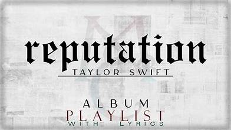

Portada del álbum

Historia
*Reputation* fue lanzado el 10 de noviembre de 2017. Taylor exploró temas de fama, amor y redención, con un sonido más electrónico y oscuro. El álbum incluye éxitos como Look What You Made Me Do y Delicate.
Mini‑juego con Canvas
Haz clic en el lienzo para cambiar el color del círculo 🎯
Listas distintas
Lista ordenada de canciones
- ...Ready For It?
- End Game
- I Did Something Bad
- Delicate
- Look What You Made Me Do
Premios y reconocimientos
El álbum Reputation fue un éxito mundial, debutando en el número 1 del Billboard 200. Ganó múltiples premios, incluyendo el American Music Award a Álbum Favorito Pop/Rock. Además, su gira fue una de las más taquilleras de la historia.
Curiosidades
- Fue el primer álbum de Taylor en usar una estética más oscura y misteriosa.
- La canción “Delicate” se convirtió en un himno de vulnerabilidad y confianza.
- El tour de Reputation recaudó más de 300 millones de dólares.
- La portada muestra a Taylor con tipografía inspirada en periódicos.
Tabla de impacto
| Año | Evento | Impacto |
|---|---|---|
| 2017 | Lanzamiento del álbum | Debut #1 en Billboard |
| 2018 | Reputation Stadium Tour | Más de 2 millones de asistentes |
| 2019 | Premios AMA | Álbum Favorito Pop/Rock |
Juego extra en Canvas
Haz clic para crear corazones ❤️ en el lienzo
Lista no ordenada de temas del álbum
- Fama
- Amor
- Redención
- Confianza
Lista de definición
- Reputation
- La reputación que se construye y se destruye en la era digital.
Importante
Ctrl + R para reiniciar el juego.
Look What You Made Me Do — canción icónica del álbum.“Mi reputación nunca ha sido peor, así que... tú debes gustarme por mí.”